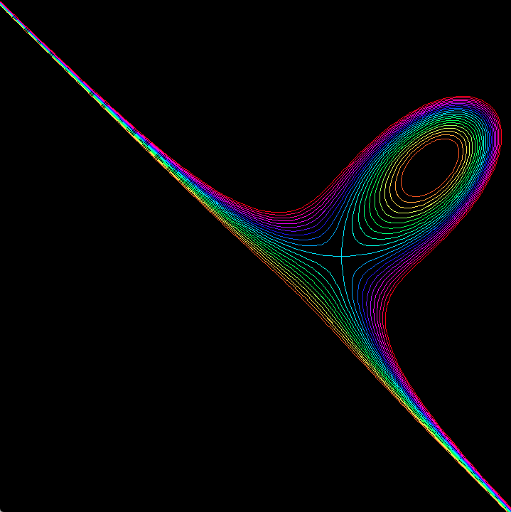

Folium Of Descartes f(x,y) = 0
and other level lines of f(x,y) = x^3 + y^3 - 3x*y
Modify the curve
Select level Nr. 0 ... 13:
The level curves of the function
f(x,y) = x^3 + y^3 -3*x*y
can be computed from the ODE:
c'(t) = Rot90(grad f)(c(t))
where grad f vanishes at the origin [x,y] = [0,0],
where the Folium Of Descartes
has a double point singularity and grad f vanishes at
[x,y] = [1,1], where f has a local minimum.
The level curves of the folium polynomial are individually computed as
solutions of an ODE.
Therefore they can be treated as parametrized curves.

These level curves of the Folium of Descartes are computed as solution set of the equation
f(x,y) = const for various constants. These curves are not parametrized.